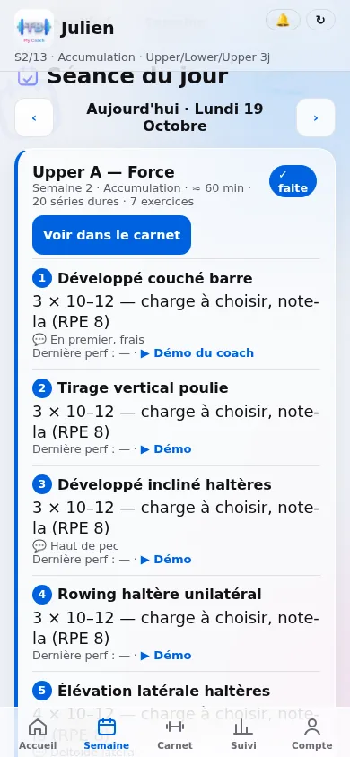
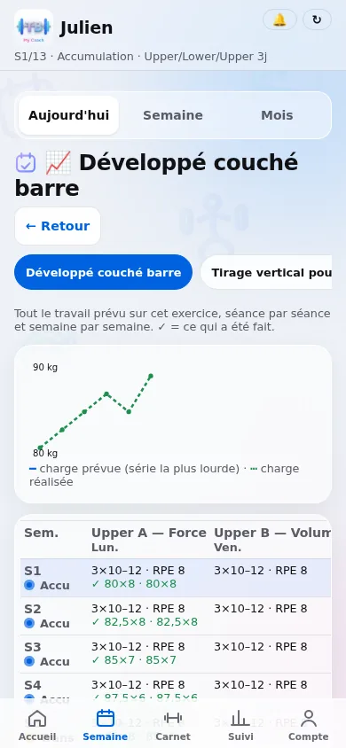
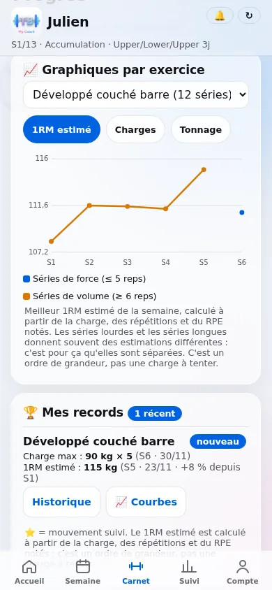
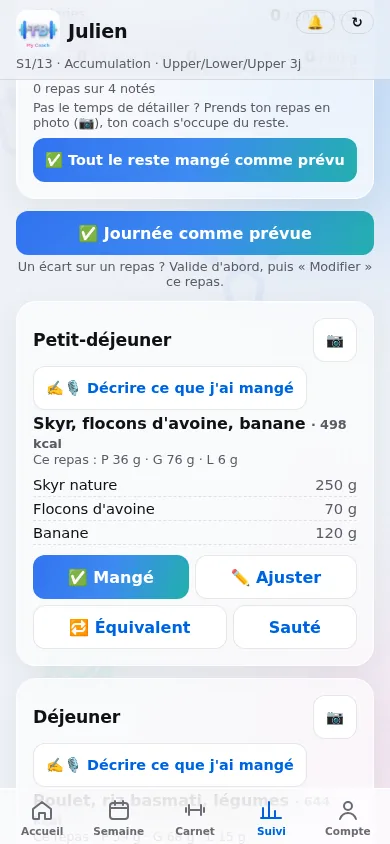

L'app qui ne se contente pas de noter. Elle programme.
Je l'ai construite pour suivre mes clients avec la même rigueur qu'en préparation physique. Aujourd'hui, tu peux l'utiliser seul, gratuitement, ou avec moi.
- iPhone et Android
- Sans store, sans publicité
- Programme consultable sans réseau


Tout ce dont un plan sérieux a besoin, dans une seule app
Beaucoup d'applis de sport sont avant tout de bons carnets. Mais un carnet ne te dit pas quoi faire la semaine prochaine, ni pourquoi.
| Souvent, dans les applis de suivi | TB my Coach | |
|---|---|---|
| Le programme | Des modèles de programme à choisir. | Un programme périodisé (accumulation, intensification, réalisation, allègement, test), généré depuis ton objectif, ton niveau, ton matériel et tes jours. |
| Les charges | La charge est souvent à choisir toi-même. | Proposées depuis ton 1RM et ton carnet, avec recalcul du 1RM au fil des séances, ou guidées par l'effort ressenti (RPE) selon la phase du cycle. |
| La progression | Un historique à interpréter seul. | Surcharge progressive automatique et vue par exercice : tout le travail prévu, semaine par semaine, sur le cycle entier. |
| Les techniques avancées | Rarement prévues, encore plus rarement notées. | Rest-pause, myo-reps, cluster, dégressives, excentriques lentes, reps forcées, pauses… programmables et notées avec leurs détails (repos, mini-séries). |
| La nutrition | Compter des calories, aliment par aliment. | Un plan construit avec tes plats, les macros par repas, des alternatives équivalentes, ta journée type, et une estimation de repas à la voix. |
| Le coach | Pas prévu, ou dans une autre appli de messagerie. | Dans la même app quand tu le souhaites, avec ton historique complet. Tu passes de l'autonomie au coaching sans repartir de zéro. |
Chaque séance a une raison d'être
- Programme généré pour toiEn salle ou à la maison, selon ton matériel, avec les mouvements principaux que tu choisis.
- Charges guidées pour chaque sérieDepuis ton 1RM et ton carnet, ou par l'effort ressenti (RPE) selon la phase.
- Carnet de séance rapideSéries, charges, répétitions, RPE, en quelques touches.
- Chrono de récupération avec sonPour respecter tes temps de repos sans regarder ta montre.
- Techniques d'intensificationRest-pause, myo-reps, cluster, dégressives, reps et demie, série 21, occlusion…
- Séance modifiableRéorganise les exercices, ajoute un exercice hors programme, remplace-le par muscle.
- Calendrier de la semaineDéplace une séance d'un glissement quand la semaine change.
- Vue par exerciceTout le travail prévu et réalisé sur un mouvement, sur tout le cycle.


Tes plats, des quantités organisées. Rien d'interdit.
- Besoins estimés pour toiSelon ton profil, ton activité et ton objectif.
- Plan construit avec de vrais platsJours d'entraînement et de repos différenciés, macros par repas.
- Alternatives équivalentesRemplace un plat par un autre aux apports proches, en un geste.
- Ta journée typeTu décris ce que tu manges vraiment : le plan part de là.
- Estimateur de repasDécris ton repas par écrit ou à la voix, l'app propose les quantités.
- Base d'aliments françaiseConstruite sur la table de composition Ciqual, enrichie de produits du commerce.
- Extras rattachés au repasLe dessert ou le verre du dîner comptent dans le bon repas.
- Liste de coursesGénérée depuis ton plan, pour le nombre de jours choisi.
Voir que ça avance, c'est ce qui fait continuer
- Records personnelsChaque nouveau record est signalé, au moment où tu le bats.
- Graphiques par exerciceTa charge estimée, séance après séance.
- Poids, mensurations, photosJe suis aussi le tour de taille, pas seulement la balance.
- Bilan de la semaineÉnergie, sommeil, stress, faim, motivation : en 30 secondes, le dimanche.
- Rappels et notificationsSéance du jour, bilan du dimanche, horaires réglables.
- Accueil « Aujourd'hui »Ta séance, tes repas et ce qu'il reste à faire, sur un seul écran.
Commence sans payer. Passe Premium si tu veux tous les outils.
| Gratuit · 0 € | Premium · 9,99 €/mois ou 59,99 €/an | |
|---|---|---|
| Programme | Programme de départ généré par ton questionnaire | Programme modifiable, régénérable, banque de programmes |
| Carnet, chronos, records | Inclus | Inclus |
| Surcharge progressive automatique | — | Incluse |
| Vue par exercice | — | Incluse |
| Poids, mensurations | Inclus | Inclus |
| Nutrition | Journal alimentaire simple | Plan calculé, alternatives, estimateur de repas |
| Essai | Sans carte bancaire | 7 jours gratuits, résiliable avant la fin |
Envie d'être guidé ? Le Coaching léger (89 €/mois) et le Coaching 12 semaines se passent dans la même app. TVA non applicable, art. 293 B du CGI.
Sur ton écran d'accueil en deux gestes
TB my Coach est une application web installable : pas de store, pas de mise à jour à faire, la dernière version est toujours là.
- Ouvre l'appDepuis ce lien, dans Safari sur iPhone ou Chrome sur Android.
- Ajoute-la à l'écran d'accueiliPhone : bouton Partager, puis « Sur l'écran d'accueil ». Android : menu ⋮, puis « Installer l'application ».
- Connecte-toiAvec ton e-mail et ton mot de passe. Ton programme reste consultable sans réseau, et tes messages partent au retour de la connexion.
Elles t'appartiennent
Tes données sont hébergées en Europe, ne sont jamais revendues et ne servent à aucune publicité. Tu peux télécharger une copie de tes données ou supprimer ton compte à tout moment, depuis l'app. Détails dans la politique de confidentialité.
L'app accompagne l'entraînement et le bien-être. Elle ne remplace pas un avis médical et ne garantit aucun résultat chiffré.
Ton programme est prêt en deux minutes
Crée ton compte, réponds au questionnaire, note ta première séance.